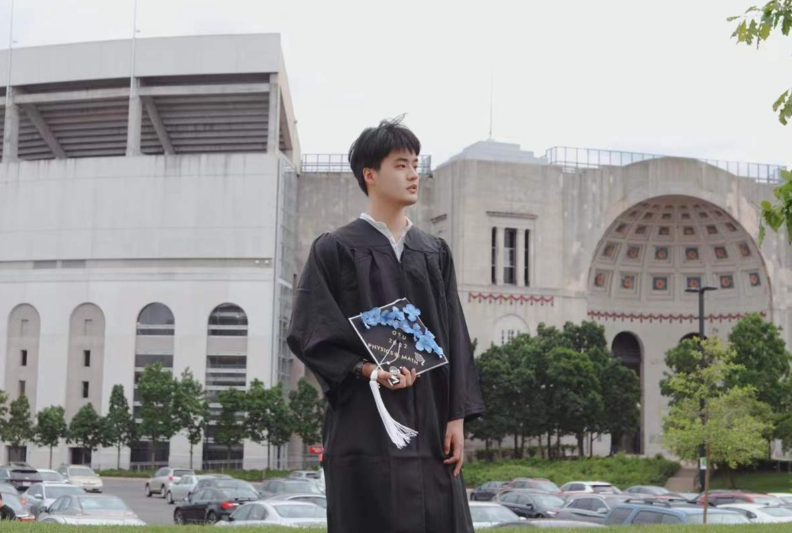

Ziyao Su | 粟梓尧
Hi! I am a PhD candidate in Materials Science and Engineering at The Ohio State University. I am currently working with Dr. Enam Chowdhury on computational modeling of ultrafast laser–matter interactions. I received my B.S. degrees in Physics and Mathematics at OSU as well.
About Me
My research focuses on modeling ultrashort-laser-induced damage, electron dynamics, field enhancement, and energy absorption in multilayer mirrors, gratings, and hybrid metal–dielectric coatings
My goal is to develop practical simulation frameworks that explain ultrashort-laser damage mechanisms and support the design of more damage-resistant optical coatings and gratings for next-generation PW laser systems.
I have collaborated with Dr. Carmen Menoni's group at Colorado State University and XUV Lasers Inc. to validate laser damage thresholds of optical components. I also look forward to working with other groups on modeling laser-induced damage thresholds and optimizing optical coating designs.
News
- [11/2025] Invited virtual talk - "2D FDTD Modeling of Ultrashort Laser-Matter Interactions" at Laboratory for Laser Energetics, University of Rochester.
- [10/2025] Received the MJ Soileau Best Student Paper Award at SPIE Laser-Induced Damage in Optical Materials 2025 for “Keldysh ionization based-FDTD modeling of laser-induced damage threshold of MLD-IBS compression gratings for petawatt 2 μm laser systems”! [OSU News].
- [04/2024] Passed Ph.D. candidacy exam. Thesis committee: Dr. Enam Chowdhury, Dr. Wolfgang Windl, Dr. Maryam Ghazisaeidi, and Dr. Jinwoo Hwang.
- [01/2023] Started Ph.D. journey in Materials Science and Engineering at The Ohio State University, advised by Dr. Enam Chowdhury.
Academic Service
- Applied Optics2024 · 2025
- Optics Express2026
- Optics Letters2026
Selected Publications
Journal Articles
-
Optics Letter
-
High Power Laser Science and Engineering
-
High Power Laser Science and Engineering
-
Optics Letters
Conference Proceedings
-
CLEO 2026
-
SPIE Laser-Induced Damage in Optical Materials 2025 MJ Soileau Best Student Paper Award
-
CLEO 2024 Oral Presentation